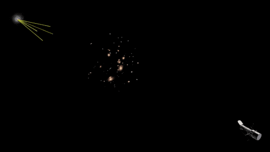

Personal website of Ryan Brady
My work focuses on harnessing the properties of gravitational lensing for cosmological inference. Specifically, I analyze multiply imaged quasars observed with the Hubble and James Webb Space Telescopes in an effort to further constrain the value of the Hubble constant. I am currently an M.A. Physics student at Stony Brook University and a member of the Astronomy & Cosmology Group under the mentorship of Dr. Simon Birrer. I also received my Bachelor of Science with honors in both Physics & Astronomy at SBU, where my thesis focused on the Gravitational Lens Modeling of Doubly Imaged Quasars. To read more on my science and the Universe, please see my Research page.

Illustration of the gravitational lensing effect. The path traveled by photons becomes curved due to the presence of a massive gravitational potential (in this case a cluster of galaxies) as they travel towards our telescopes on Earth. GIF credit: NASA, ESA, and Goddard Space Flight Center/K. Jackson.